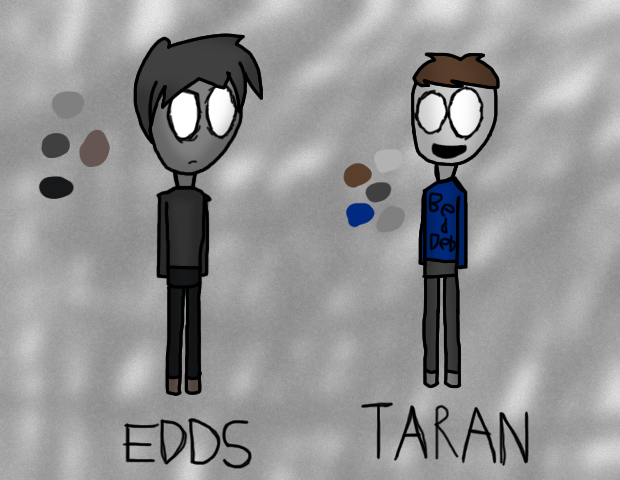
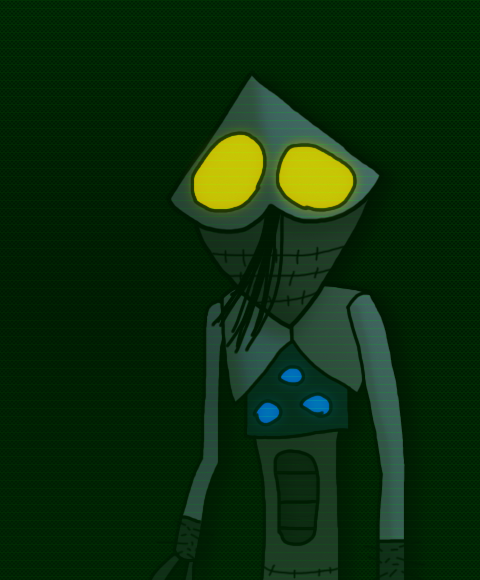
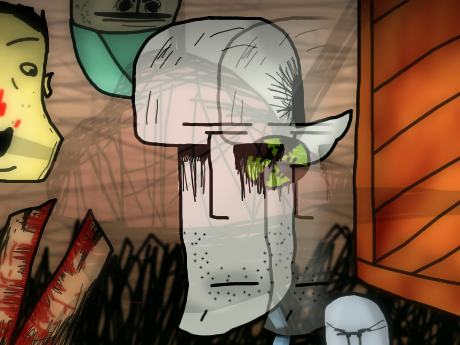
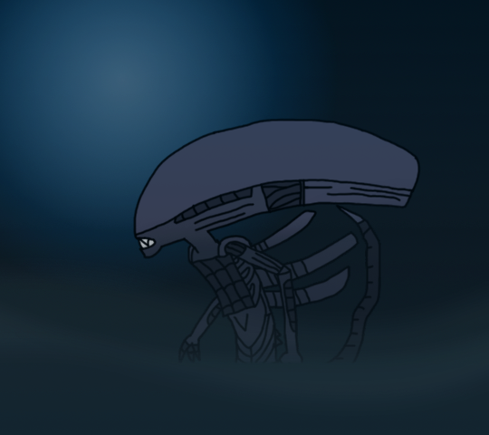

Old Images

This pic was made when I started being a horror artist. I drew low res pictures
And posted them on DeviantArt which you'll be seeing here.

Pic of some OCs that never made it. After this I went with the fear theme.

Recognize the style? It's free handed! I went with this rather than line art when
I started over there.

This list is possibly not following the original order of image creation. But
Whatever. Here's a putrid fucker.

Fuck it's Hamster Fairy Mc Dickins! He, the fairy, give out his gifts to all the
precious kids in the world by letting them suck his nips. Touching indeed.

I where listening to 1000 Junkies by ZIA (Zentriert Ins Antlitz) and wanted to
make a little tribute to it. This is what I made.

This is me!!

A thing with this one is that this was game related.

Dittoness.

Fanart of David Firth's (First?) animation. Alan is a super hero!

You get Slaughter For Disobedience.

This pic has something in it that was a big idea. A movie idea! I don't think
That's gonna happen now, but I can hope. Or sumfn.

The meaty wall hungers for more flesh. They who touch it shall be devoured!

A Xenomorph! Loved the series. Too bad it ended.

A pedophile goes to a baby on a pole. That's this image right here.

This picture was in influence by Velvet Acid Christ. Exactly 3 images was influenced
by them/it.

"You Fucking Freak! Shut your Fucking mouth!" Phucking Phreak - Velvet Acid Christ

Un Uglyfy Me. I feel like I'm too ugly to live. Anyway.

A Prequel Adventure fanpic. Too many soups.

It's okay.

This guy is called Azar.

This was a gift to someone from DeviantArt. Don't remember who she was called now.